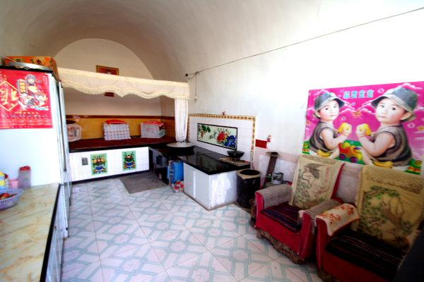
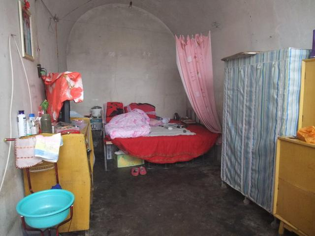
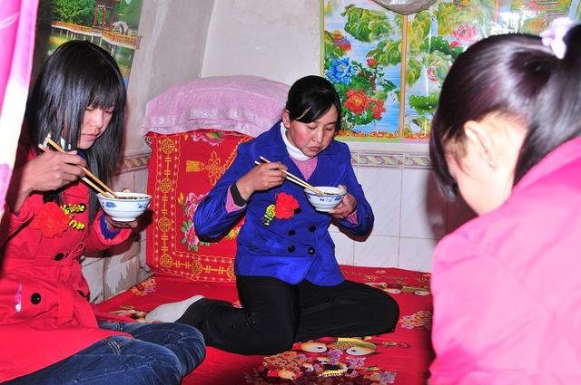
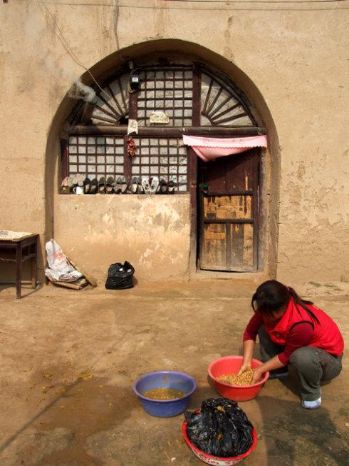
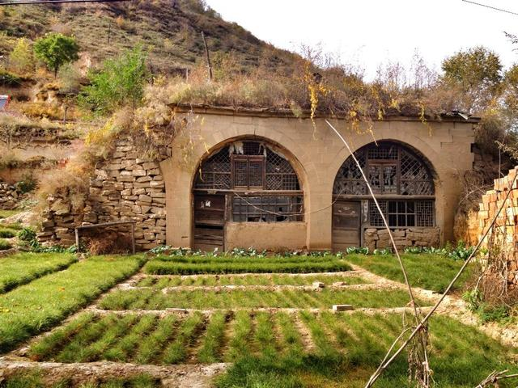

窑洞，是中国五大传统民居建筑之一。陕北的黄土高坡，沟壑雄奇、苍凉而贫瘠，在与大自然的残酷搏斗中，造就了豪放粗犷的人群，也诞生了极具特色的“黄土建筑”——窑洞。
窑洞是黄土高原的产物，陕北农民的象征。陕北的窑洞是依山势开凿出来的拱顶式窑洞，是陕北的一道风景线。
窑洞蕴含着北方民族穴居的历史遗风。
由于黄土本身具有直立不塌的性质，而拱顶的承重能力又好，所以窑洞一般都是采取拱顶的方式来保证了它的稳固性。陕北取黄土高原土层厚实、地下水位低的特点，挖窑洞作民居，有冬暖夏凉的优点。
随着历史的发展和社会进步。土窑洞大量废弃，石窑，砖窑逐渐兴旺。
窑洞的规模和装修程度看出这家人的生活水平。
富裕家庭的窑洞。

小康之家的窑洞。

温饱之家的窑洞。
穷苦人家的窑洞。
刚装修迎娶新娘的窑洞。
四合院大户人家的窑洞。

陕北人离不开窑洞，窑洞也离不开陕北人，在这块贫瘠土地上生活着的陕北人，在窑洞的废兴变化中创造了具有陕北特色的历史、文化和人。
这里的老人保持着艰苦朴素的作风。
陕北农家老人的“早餐”：两个鸡蛋+两碗米汤+ 一盘炒豆芽+ 一盘炒白菜胡萝卜+两块干馍。
家庭聚会时的场景。

在窑洞前洗东西。
没事闲着唠嗑。
拉石磨。
耕地。
晒谷子。

农村闲话中心。

男人在黄土地上刨挖，女人则在土窑洞里操持家务、生儿育女。窑洞是黄土高原的产物、陕北人民的象征，它沉积了古老的黄土地深层文化。
热门评论